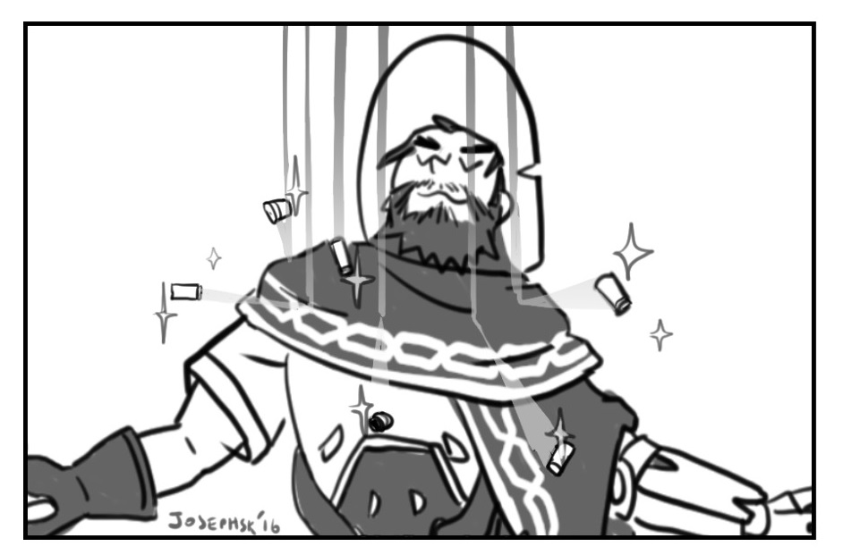

Today we had our first lesson in motion graphis, and it was a blast - the limits are endless!
The follow-along (monkey see, monkey do) style exersize at the start of the lesson made me feel like I had a much better grasp of the program than before and had me toying around with lights and the camera as well as making the animations more dynamic. I tried to emulate the 'slides' of the logo sliding up slightly, as if theyre peeking over an edge to see if theyre in the clear, then rushing to the top as well as a camera that slowly zoomed out from where it first emerged, then panning around the scene until the whole logo is revealed.
This was my result of the first exersize:
Consequently I was piqued to continue developing my skills in motion graphics, but i had my sights set on something much more interesting than panning a camera around an animated logo.
My big interest? Particles.
But before I could begin toying around with particles, I needed a logo of my own, something I could use in the future. So, opening Adobe Illustrator, I cracked my brain's imaginary knuckles and rolled up my already rolled up sleeves a little further, and set to work.
Unsurprisingly, with my very little research and generally tight time schedule (as my brain continued shouting at me to just get to the fun stuff already), it turned out mediocre at best.
I wanted something round, something with my name (1221s) on it, as well as something ambiguous. Because I pride myself with being very versatile and dont have a defined image, I wanted it to be up to people's interpretations. The one thing I did want to make sure of was that it contained my primary color: Orange, the one definite part of my image that has not changed over the years.
Lo an behold, it ended up being entirely orange - go figure, I like orange.
Here's my end result:
I've since gotten comments that it looked like the body of a honeybee, a beehive, an airballoon and a strange type of dogtag. I enjoy that it can be interpreted so differently.
But by now I was ready, I had opened cinema4D, closed down unused tabs in chrome so there was plenty of space to look for tutorials, saved the files in all the right formats and imported the graphic.
And imediately hit my first issue: the hole in the lower part of the logo didn't transfer properly. Essentially the 'extrude' of which I had made my logo a child, extruded over the hole.
Back to Illustrator I went to just plain delete it so I could make a circle spline in C4D and have the spline mask subtract it.
My initial thought was to make the logo be showered in balls, bouncing off the ground and going everywhere.
Essentially, I wanted my logo to feel like this:

And in the middle of that I thought; "Who doesnt like a little snazzy animation"
This was my first attempt:
As you can probably tell, this isnt ideal. The balls go flying everywhere and whether thats due to the animation of the logo or if its their self-collisions I had no idea at the time. On another topic, the composition looked tacky and wasnt very catching. So I decided to make it lie down, as though it is imbedded in the ground. This would also give more focus to the balls.
And from this point my focus was on: Why do my balls go flying everywhere.
I tried again.
And again
And again.
No matter what I tried, my balls were simply terrified of their own existence and kept deciding to hijack straight outta the frame.
Then I watched some tutorials, took a breather, and when I came back, I gave up on my dream of making them little blobs, removing the 'soft body' simulation tag, and replaced it with a 'rigid body' tag.
Imediately my renders became much quicker, my editor was actually showing the balls moving instead of a slideshow moving at 5 frames per hour and most importantly, my balls had learned to love each other, nestling in close and finally looking somewhat like the ballpit I had envisioned.
Then came the next issues: My 'bowl' which I was trying to use to keep the balls inside the frame was making a sort of invisible lid. Watched some more tutorials, pulled out some more hair, and found out that inside the 'collider body' tag i had assigned to it, I needed to change it to a 'static mesh'.
Finally, my balls were happy in the bowl, covering the logo.
Next up I played around with materials, lighting and the mass of the balls, until I arrived at my final result:
INSERT VIDEO.
In the future, i'd like to learn more about particle effectors, creating a maelstrom and in the end exploding the balls
- but thats all food for another day.